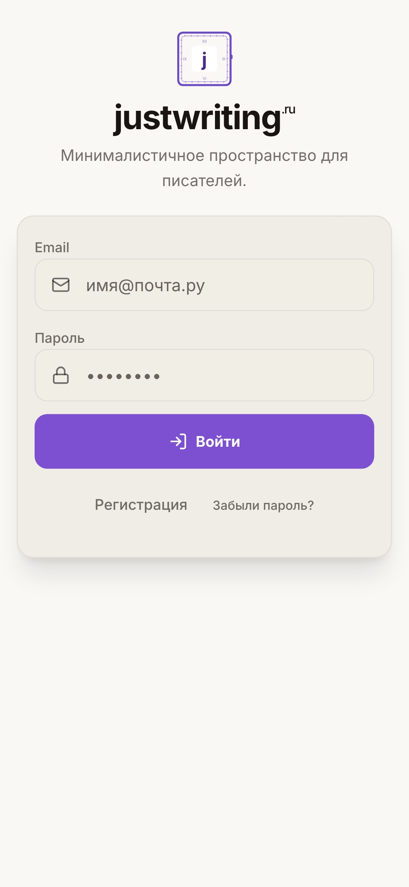
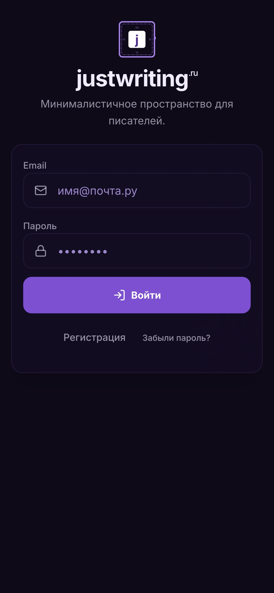

Телефон
На телефоне те же заметки, тот же ИИ и то же шифрование, но экран собран по-другому: снизу — четыре вкладки, вместо панелей — листы, которые выезжают снизу, и «назад» закрывает лист, а не выбрасывает из приложения.
На этой странице
Что другое на телефоне
- Нижняя навигация — четыре вкладки: Писать, Заметки, ИИ, Профиль. Верхней боковой панели, как на компьютере, нет.
- Листы вместо окон. Действия над заметкой, режим сессии, панели тегов и календаря, «Сохранить как…» — всё это лист, который выезжает снизу и закрывается жестом вниз, кнопкой или аппаратной «назад».
- Текст крупнее, поля на всю ширину. Поле ввода всегда 16 px — иначе браузер бы приближал экран при каждом касании.
- Тема по системе. Пока вы не вошли, приложение следует системной настройке «светлое/тёмное». После входа тема берётся из вашего выбора в настройках.
- PDF на телефоне нет. Там, где на компьютере есть печать в PDF, на телефоне — «Сохранить как…» с txt, md и docx.
Первый вход
Аккаунт создаётся по приглашению: откройте письмо-приглашение на телефоне и перейдите по ссылке. Приложение пройдёт с вами три коротких шага — пароль, согласие на политику и (по желанию) на ИИ, облако — и покажет код восстановления. Код показывается всегда, даже если облако вы включили и даже если отказались от него: шифрование работает на устройстве в любом случае.
Если ссылка открылась второй раз или страница перезагрузилась посреди настройки, ничего не теряется: мастер продолжается с того же шага. Ссылки на политику и условия открываются в новой вкладке, чтобы настройка не начиналась заново.


Без аккаунта
Можно писать и не входя: заметки лежат только в этом браузере на этом телефоне, облачной копии нет, ИИ недоступен. Когда аккаунт появится, приложение предложит перенести гостевые заметки в него; незаконченный черновик переносится тоже, а если в аккаунте уже есть свой черновик, гостевой сохранится отдельной заметкой.
Кнопка «назад»
Аппаратная «назад» и свайп от края экрана закрывают открытый лист — панель настроек, лист действий, читалку, — и только потом уводят из приложения. Листы не копятся в истории: вышли из читалки в редактор по Продолжить писать — «назад» вернёт туда, где вы были до читалки, а не заставят нажимать её дважды впустую.
Дальше по разделам
- Письмо на телефоне — чип режима, микрофон, «Сохранить», окно Записано.
- Заметки и читалка — список и сетка, значки хранения, лист ⋯, «Сохранить как…», «Инфо».
- ИИ — диалоги, собеседники, счётчик запросов.
- Профиль и настройки — состояние аккаунта, сейф, облако, темы.
Общие вещи — про шифрование, облако, резервные копии и приватность — одинаковы на телефоне и на компьютере: руководство для компьютера.